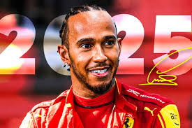

Hamilton a Ferrari
Por números, el que es el piloto más exitoso de la historia de la Fórmula 1 y el que es el equipo más exitoso de la historia de la Fórmula 1 han unido fuerzas y empiezan juntos una nueva era. El tiempo dirá si acaba siendo exitosa o no, pero no hay dudas de que este comienzo despierta mucha ilusión y Lewis tiene muchas ganas de ver lo que le depara el futuro vestido de rojo.
"Hay algunos días que recordarás para siempre y hoy, mi primer día como piloto de Ferrari, es uno de ellos. He tenido la suerte de haber conseguido cosas en mi carrera que nunca pensé que serían posibles, pero parte de mí siempre ha tenido el sueño de pilotar vestido de rojo. No puedo estar más feliz de hacer realidad este sueño hoy", ha comentado Hamilton en su cuenta oficial de Instagram.
"Hoy arrancamos una nueva era en la historia de este icónico equipo y no puedo esperar a ver qué historia escribiremos juntos", ha expresado Lewis para cerrar.
